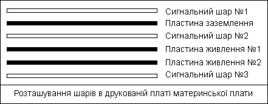
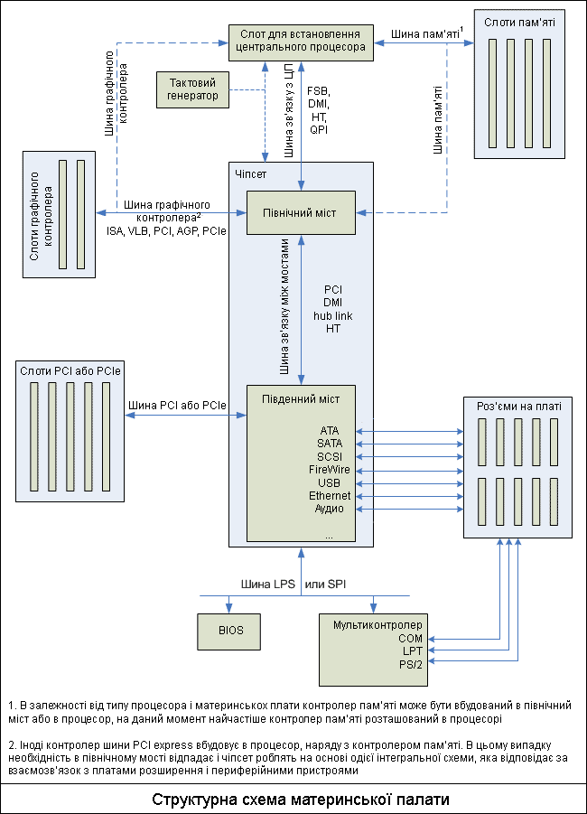
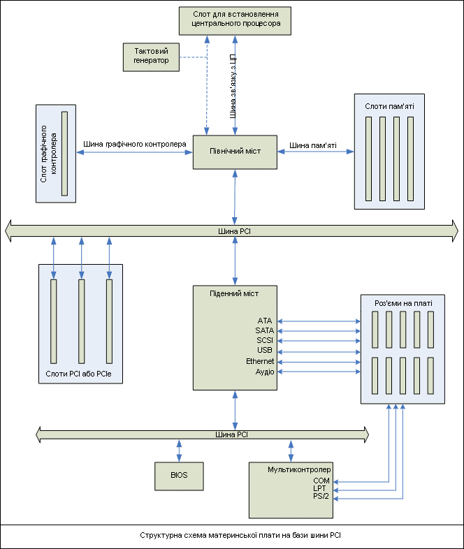

Зміст
- 1. Вступ
- 2. Друкована плата
- 3. Чіпсет
- 3.1. Основні функції північного моста
- 3.1.1. Интерфейсы связи с процессором
- 3.1.2. Інтерфейси зв'язку з графічним адаптером
- 3.1.3. Інтерфейси зв'язку з південним мостом
- 3.2. Основні функції південного моста
- 3.2.1. Інтерфейси зв'язку з платами розширення
- 3.2.2. Інтерфейси зв'язку з периферійними пристроями та іншими ЕОМ
- 3.2.3. Интерфейсы шин связи южного моста с жесткими дисками
- 3.2.3. Интерфейсы шин связи южного моста с жесткими дисками
- 3.2.4. Інтерфейси зв'язку з повільними компонентами материнської плати
- 4. BIOS (Basic Input-Output System)
- 5. Інші елементи материнської плати
Пристрій і призначення материнської плати
Материнська або системна плата - це багатошарова друкована плата, що є основою ЕОМ, що визначає її архітектуру, продуктивність і здійснює зв'язок між усіма підключеними до неї елементами і координацію їх роботи.
1. Вступ
Материнська плата - це один з найважливіших елементів ЕОМ, що визначає її вигляд і забезпечує взаємодію всіх підключаєми до материнської плати пристроїв.
На материнській платі розміщуються всі основні елементи ЕОМ, такі як:
- набір системної логіки або чіпсет - основний компонент материнської плати, що визначає який тип процесора, тип ОЗП, тип системної шини можна використовувати;
- слот для установки процесора. Визначає, який саме тип процесорів можна під'єднати до материнської плати. У процесорах можуть використовуватися різні інтерфейси системної шини (наприклад, FSB, DMI, QPI і т.д.), які то процесори можуть мати вбудовану графічну систему або контролер пам'яті, може відрізнятися кількість "ніжок" і так далі. Відповідно для кожного типу процесора необхідно використовувати свій слот для установки. Найчастіше виробники процесорів і материнських плат зловживають цим, женучись за додатковою вигодою, і створюють нові процесори не сумісні з існуючими типами слотів, навіть якщо цього можна було уникнути. В результаті доводиться при оновленні комп'ютера міняти не тільки процесор, але і материнську плату з усіма витікаючими з цього наслідками.
- центральний процесор - основний пристрій ЕОМ, що виконує математичні, логічні операції та операції управління всіма іншими елементами ЕОМ;
- контролер ОЗП (оперативно запам'ятовуючий пристрій). Раніше контроллер ОЗП вбудовували в чіпсет, але зараз більшість процесорів мають вбудований контроллер ОЗП, що дозволяє збільшити загальну продуктивність і розвантажити чіпсет.
- ОЗП - набір мікросхем для тимчасового зберігання даних. У сучасних материнських платах є можливість підключення одночасно декількох мікросхем ОЗП, зазвичай чотирьох або більше.
- ППЗУ (БІОС), що містять програмне забезпечення, яке здійснює тестування основних компонентів ЕОМ і настройку материнської плати. І пам'ять CMOS зберігає настройки роботи BIOS. Часто встановлюють кілька мікросхем пам'яті CMOS для можливості швидкого відновлення працездатності ЕОМ в екстреному випадку, наприклад, невдалої спроби розгону;
- акумулятор або батарейка, що живить пам'ять CMOS;
- контролери каналів введення-виведення: USB, COM, LPT, ATA, SATA, SCSI, FireWire, Ethernet і ін. Які саме канали введення-виведення будуть підтримуватися, визначається типом використовуваної материнської плати. У разі необхідності, додаткові контролери введення-виведення можна встановлювати у вигляді плат розширення;
- кварцовий генератор, що виробляє сигнали, за якими синхронізується робота всіх елементів ЕОМ;
- таймери;
- контролер переривань. Сигнали переривань від різних пристроїв надходять не безпосередньо в процесор, а в контролер переривань, який встановлює сигнал переривання з відповідним пріоритетом в активний стан;
- роз'єми для установки плат розширення: відеокарт, звукової карти і т.д .;
- регулятори напруги, що перетворюють початкове напругу в необхідне для живлення компонентів встановлених на материнській платі;
- засоби моніторингу, що вимірюють швидкість обертання вентиляторів, температуру основних елементів ЕОМ, напругу живлення і т.д .;
- звукова карта. Практично всі материнські плати містять вбудовані звукові карти, що дозволяють отримати пристойну якість звуку. При необхідності можна встановити додаткову дискретну звукову карту, що забезпечує краще звучання, але в більшості випадків це не потрібно;
- вбудований динамік. Головним чином використовується для діагностики працездатності системи. Так по тривалості і послідовності звукових сигналів ЕОМ можна визначити більшість несправностей апаратури;
- шини - провідники для обміну сигналами між компонентами ЕОМ.
2. Друкована плата
Основу материнської плати становить друкована плата. На друкованій платі розташовуються сигнальні лінії, часто звані сигнальними доріжками, що з'єднують між собою всі елементи материнської плати. Якщо сигнальні доріжки розташовані дуже близько один до одного, то передаваємі по ним сигнали будуть створювати перешкоди один для одного. Чим довше доріжка і вище швидкість передачі даних по ній, тим більше вона створює перешкод для сусідніх доріжок і тим більше вона уразлива для таких перешкод.
В результаті, можуть виникати збої в роботі навіть наднадійних і дорогих компонентів ЕОМ. Тому основне завдання при виробництві друкованої плати так розмістити сигнальні доріжки, щоб мінімізувати дію перешкод на сигнали, що передаються. Для цього друковану плату роблять багатошаровою, багаторазово збільшуючи корисну площу друкованої плати і відстань між доріжками.
Зазвичай сучасні материнські плати мають шість шарів: три сигнальних шару, шар заземлення та дві пластини живлення.

Однак кількість шарів харчування і сигнальних шарів може варіюватися, залежно від особливостей материнських плат.
Розмітка і довжина доріжок вкрай важлива для нормальної роботи всіх компонентів ЕОМ, тому при виборі материнської плати треба особливу увагу приділяти якості друкованої плати і розводці доріжок. Особливо це важливо, якщо ви збираєтеся використовувати компоненти ЕОМ з нестандартними настройками і параметрами роботи. Наприклад, розганяти процесор або пам'ять.
На друкованій платі розташовуються всі компоненти материнської плати і роз'єми для підключення плат розширення і периферійних пристроїв. Нижче на малюнку зображена структурна схема розташування компонентів на друкованій платі.

3. Чіпсет
Чіпсет або набір системної логіки - це основний набір мікросхем материнської плати, що забезпечує спільне функціонування центрального процесора, ОЗУ, відеокарти, контролерів периферійних пристроїв та інших компонентів, що підключаються до материнської плати. Саме він визначає основні параметри материнської плати: тип підтримуваного процесора, обсяг, канальність і тип ОЗУ, частоту і тип системної шини і шини пам'яті, набори контролерів периферійних пристроїв і так далі.
Як правило, сучасні набори системної логіки будуються на базі двох компонентів, що представляють собою окремі чіпсети, пов'язані один з одним високошвидкісною шиною.
Однак останнім часом з'явилася тенденція об'єднання північного і південного моста в єдиний компонент, так як контролер пам'яті все частіше вбудовують безпосередньо в процесор, тим самим розвантажуючи північний міст, і з'являються все більш швидкі і швидкі канали зв'язку з периферійними пристроями та платами розширення. А також активно впроваджується технологія виробництва інтегральних схем, що дозволяє робити їх більш мініатюрними, дешевими і споживають менше енергії.
Об'єднання північного і південного моста в один чіпсет дозволяє підняти продуктивність системи, за рахунок зменшення часу взаємодії з периферійними пристроями та внутрішніми компонентами, раніше підключаються до південного мосту, але значно ускладнює конструкцію чіпсета, робить його більш складним для модернізації і кілька збільшує вартість материнської плати.
Але поки що більшість материнських плат роблять на основі чіпсета розділеного на два компонента. Називаються ці компоненти Північний і Південний міст.
Назви Північний і Південний - історичні. Вони означають розташування компонентів чіпсета щодо шини PCI: Північний знаходиться вище, а Південний - нижче. Чому міст? Ця назва дали чипсетам по тих функцій: вони служать для зв'язку різних шин і інтерфейсів.
Причини поділу чіпсета на дві частини наступні:
1. Відмінності швидкісних режимів роботи.
Північний міст працює з найшвидшими і вимагаючими великої пропускної здатності шини компонентами. До числа таких компонентів відноситься відеокарта і пам'ять. Однак сьогодні більшість процесорів мають вбудований контроллер пам'яті, а багато і вбудовану графічну систему, хоча і сильно поступається дискретним відеокартам, але все ж часто застосовується в бюджетних персональних комп'ютерах, ноутбуках і нетбуках. Тому, з кожним роком навантаження на північний міст знижуються, що зменшує необхідність поділу чіпсета на дві частини.
2. Більш часте оновлення стандартів периферії, ніж основних частин ЕОМ.
Стандарти шин зв'язку з пам'яттю, відеокартою і процесором змінюються набагато рідше, ніж стандарти зв'язку з платами розширення і периферійними пристроями. Що дозволяє, в разі зміни інтерфейсу зв'язку з периферійними пристроями або розробки нового каналу зв'язку, не зраджувати весь чіпсет, а замінити тільки південний міст. До того ж північний міст працює з більш швидкими пристроями і влаштований складніше, ніж південний міст, так як від його роботи багато в чому залежить загальна продуктивність системи. Тому його зміна - дорога і складна робота. Але, незважаючи на це, спостерігається тенденція об'єднання північного і південного моста в одну інтегральну схему.
3.1. Основні функції Північного моста.
Північний міст, як випливає з його назви, виконує функції контролю і напрямку потоку даних з 4-х шин:
- Шини зв'язку з процесором або системної шини.
- Шини зв'язку з пам'яттю.
- Шини зв'язку з графічним адаптером.
- Шини зв'язку з південним мостом.
Відповідно до виконуваних функцій і влаштований північний міст. Він складається з інтерфейсу системної шини, інтерфейсу шини зв'язку з південним мостом, контролера пам'яті, інтерфейсу шини зв'язку з графічною картою.
На даний момент більшість процесорів мають вбудований контроллер пам'яті, так що функцію контролера пам'яті можна вважати для північного моста застарілою.
У бюджетних ЕОМ іноді в північний міст вбудовують графічну систему. Однак на даний момент більш поширену практику має установка графічної системи безпосередньо в процесор, так що цю функцію північного моста теж будемо вважати застарілою.
Таким чином, основне завдання чіпсета - грамотно і швидко розподіляти всі запити від процесора, відеокарти і південного моста, розставляти пріоритети і створювати, якщо це необхідно, черговість. Причому він повинен бути настільки збалансований, щоб якомога сильніше скоротити простої при спробі доступу компонентів ЕОМ до тих чи інших ресурсів.
Розглянемо більш докладно існуючі інтерфейси зв'язку з процесором, графічним адаптером і південним мостом.
3.1.1. Інтерфейси зв'язку з процесором
На даний момент існують наступні інтерфейси зв'язку процесора з північним мостом: FSB, DMI, HyperTransport, QPI.
FSB (Front Site Bus) - системна шина, яка використовується для зв'язку центрального процесора з північним мостом в 1990-х і 2000-х роках. FSB розроблена компанією Intel і вперше використовувалася в комп'ютерах на базі процесорів Pentium.
Частота роботи шини FSB є одним з найважливіших параметрів роботи ЕОМ і багато в чому визначає продуктивність всієї системи. Зазвичай вона - в кілька разів менше частоти роботи процесора.
Частоти, на яких працює центральний процесор і системна шина, має загальну опорну частоту і в спрощеному вигляді розраховуються, як Vп = Vo * k, де Vп - частота роботи процесора, Vo-опорна частота, k - множник. Зазвичай в сучасних системах опорна частота дорівнює частоті шини FSB.
Більшість материнських плат дозволяють вручну збільшувати частоту системної шини або множник, змінюючи налаштування в BIOS. У старих материнських платах подібні налаштування змінювалися за допомогою перестановки перемичок. Збільшення частоти системної шини або множник збільшує продуктивність ЕОМ. Однак в більшості сучасних процесорів середньої цінової категорії множник заблокований, і єдиний спосіб підняти продуктивність обчислювальної системи - це збільшити частоту системної шини.
Частота системної шини FSB поступово зростала з 50 МГц, для процесорів класу Intel Pentium і AMD K5 на початку 1990-х років, до 400 МГц, для процесорів класу Xeon і Core 2 в кінці 2000-х. При цьому пропускна здатність зростала з 400 Мбіт/с до 12800 Мбіт/с.
Шина FSB використовувалася в процесорах типу Атом, Celeron, Pentium, Core 2, і Xeon аж до 2008 року. На даний момент ця шина витіснена системними шинами DMI, QPI і Hyper Transport.
HyperTransport - універсальна високошвидкісна шина типу точка-точка з низькою латентністю, використовувана для зв'язку процесора з північним мостом. Шина HyperTransport - двунаправлена, тобто для обміну в кожну сторону виділена своя лінія зв'язку. До того ж вона працює за технологією DDR (Double Data Rate), передаючи дані, як по фронту, так і по спаду тактового імпульсу.
Технологія розроблена консорціумом HyperTransport Technology на чолі з компанією AMD. Варто відзначити, що стандарт HyperTransport - відкритий, що дозволяє використовувати його в своїх пристроях різним компаніям.
Перша версія HyperTransport була представлена в 2001 році, і дозволяла проводити обмін зі швидкістю 800 МТР/с (800 Мега Транзакцій в секунду або 838 860 800 обмінів в секунду) з максимальною пропускною спроможністю - 12.8 Гбайт/с. Але вже в 2004 році була випущена нова модифікація шини HyperTransport (v.2.0), що забезпечує 1.4 ГТр/с з максимальною пропускною спроможністю - 22.4 Гбайт / с, що майже в 14 разів перевищувало можливості шини FSB.
18 серпня 2008 року було випущена модифікація 3.1, що працює зі швидкістю 3.2 ГТр/с, з пропускною спроможністю - 51.6 Гбайт/с. На даний момент це - найшвидша версія шини HyperTransport.
Технологія HyperTransport - дуже гнучка, і дозволяє варіювати, як частоти шини, так і її розрядність. Це дозволяє використовувати її не тільки для зв'язку процесора з північним мостом і ОЗУ, але і в повільних пристроях. При цьому можливість зменшення розрядності і частоти веде до економії енергії.
Мінімальна тактова частота шини - 200 МГц, при цьому даних будуть передовалась зі швидкістю - 400 МТр/с, через технології DDR, а мінімальна розрядність - 2 біти. При мінімальних параметрах максимальна пропускна спроможність складе 100 Мбайт/с. Всі наступні підтримувані частоти і розрядності - кратні мінімальній тактовій частоті і розрядності аж до швидкості - 3.2 ГТр/с, і розрядності - 32 біта, для ревізії HyperTransport v 3.1.
DMI (Direct Media Interface) - послідовна шина типу точка-точка, яка використовується для зв'язку процесора з чіпсетом і для зв'язку південного моста чіпсета з північним. Розроблено компанією Intel в 2004 році.
Для зв'язку процесора з чіпсетом зазвичай використовується 4 канали DMI, що забезпечують максимальну пропускну здатність до 10 Гбайт/с, для ревізії DMI 1.0, і 20 Гбайт/с, для ревізії DMI 2.0, представленої в 2011 році. У бюджетних мобільних системах може використовуватися шина з двома каналами DMI, що в два рази знижує пропускну здатність у порівнянні з 4-х канальним варіантом.
Часто в процесори, що використовують зв'язок з чіпсетом по шині DMI, вбудовують, поряд з контролером пам'яті, контролер шини PCI Express, що забезпечує взаємодію з відеокартою. У цьому випадку потреба в північному мосту відпадає, і чіпсет виконує тільки функції взаємодії з платами розширення і периферійними пристроями. При такій архітектурі материнської плати не потрібно високошвидкісного каналу для взаємодії з процесором, і пропускної здатності шини DMI вистачає з надлишком.
QPI (QuickPath Interconnect) - послідовна шина типу точка-точка, яка використовується для зв'язку процесорів між собою і з чіпсетом. Представлена компанією Intel в 2008 році і використовується в HiEnd процесорах типу Xeon, Itanium і Core i7.
Шина QPI - двунаправленная, тобто для обміну в кожну сторону передбачений свій канал, кожен з яких складається з 20 ліній зв'язку. Отже, кожен канал - 20-розрядний, з яких на корисне навантаження припадає тільки 16 розрядів. Працює шина QPI зі швидкістю - 4.8 і 6.4 ГТр/с, при цьому максимальна пропускна здатність становить 19,2 і 25,6 Гбайт/с відповідно.
3.1.2. Інтерфейси зв'язку з графічним адаптером
Спочатку для зв'язку з графічним процесором використовували загальну шину ICA, VLB, а потім PCI, але дуже швидко пропускної здатності цих шин перестало вистачати для роботи з графікою, тим більше після поширення тривимірної графіки, що вимагає величезних потужностей для розрахунку і високої пропускної здатності шини для передачі текстур і параметрів зображення.
На заміну загальним шинам прийшла спеціалізована шина AGP, оптимізована для роботи з графічним контроллером.
AGP (Accelerated Graphics Port) - спеціалізована 32-розрядна шина для роботи з графічним адаптером, розроблена в 1997 році компанією Intel.
Шина AGP працювала на тактовій частоті - 66 МГц, і підтримувала два режими роботи: з пам'яттю DMA (Direct Memory Access) і пам'яттю DME (Direct in Memory Execute).
У режимі DMA основною пам'яттю вважалася пам'ять, вбудована в відеоадаптер, а в режимі DME - пам'ять відеокарти, які разом з основною пам'яттю перебували в єдиному адресному просторі, і відеоадаптер міг звертатися, як до вбудованої пам'яті, так і до основної пам'яті комп'ютера.
Наявність режиму DME дозволяло зменшити обсяг вбудованої в відеоадаптер пам'яті і тим самим зменшити її вартість. Режим роботи з пам'яттю DME отримав назву AGP-текстурування.
Однак дуже скоро пропускної здатності шини AGP перестало вистачати для роботи в режимі DME, і виробники стали збільшувати обсяги вбудованої пам'яті. Незабаром і збільшення вбудованої пам'яті перестало допомагати і пропускної здатності шини AGP стало категорично не вистачати.
Перша версія шини AGP - AGP 1x, працювала на тактовій частоті - 66 МГц, і мала максимальну швидкість передачі даних - 266 Мбайт/с, що було недостатньо для повноцінної роботи в режимі DME і не перевищувало швидкість попередниці - шини PCI (PCI 2.1 - 266 Мбайт/с). Тому практично відразу ж шина була доопрацьована і був введений режим передачі даних по фронту і спаду тактового імпульсу, що при тій же тактовій частоті в 66 МГц дозволило отримати пропускну здатність в 533 Мбайт/с. Цей режим називався AGP 2x.
Перша представлена на ринку ревізія AGP 1.0 підтримувала режими роботи AGP 1x і AGP 2x.
У 1998 році була представлена нова ревізія шини - AGP 2.0, що підтримує режим роботи AGP 4x, в якому за один такт передавалося вже 4 блоки даних, в результаті, пропускна здатність досягла 1 Гбайт/с.
При цьому опорна тактова частота шини не змінилася і залишилася рівною 66 МГц, а для можливості передачі чотирьох блоків даних за один такт був введений додатковий сигнал, що запускається синхронно з опорною тактовою частотою, але з частотою - 133 МГц. Дані передавалися по фронту і спаду тактового імпульсу додаткового сигналу.
При цьому напругу живлення було знижено з 3.3 В до 1.5 В, в результаті, відеокарти, випущені тільки для ревізії AGP 1.0, були несумісні з відеокартами AGP 2.0 і наступних ревізій шини AGP.
У 2002 році вийшла ревізія 3.0 шини AGP. Опорна частота шини і раніше залишилася незмінною, проте додатковий тактовий імпульс, підготовлений до запуску синхронно з опорної частотою, становив вже 266 МГц. При цьому за 1 такт опорної частоти передавалося вже 8 блоків, а максимальна швидкість склала 2.1 Гбайт / с.
Але, незважаючи на всі поліпшення шини AGP, відеоадаптери розвивалися швидше і вимагали більш продуктивної шини. Так на зміну шині AGP прийшла шина PCI express.
PCI express - послідовна двунаправлена шина типу точка-точка, розроблена в 2002 некомерційною групою PCI-SIG, до складу якої входили такі кампанії, як Intel, Microsoft, IBM, AMD, Sun Microsystems та інші.
Основне завдання, що стоїть перед шиною PCI express, - це заміна графічної шини AGP і паралельної універсальної шини PCI.
Ревізія шини PCI express 1.0 працює на тактовій частоті 2.5 ГГц, при цьому пропускна сумарна здатність одного каналу становить 400 Мбайт/с, так як на кожні передані 8 біт даних доводиться 2 службових біта і шина двунаправлена, тобто обмін в обидві сторони йде одночасно. У шині зазвичай використовується кілька каналів: 1, 2, 4, 8, 16 або 32, в залежності від необхідної пропускної спроможності. Таким чином, шини на базі PCI express в загальному випадку являють собою набір самостійних послідовних каналів передачі даних.
Так при використанні шини PCI express для зв'язку з відеокартами зазвичай використовується 16-ти канальна шина, а для зв'язку з платами розширення - одноканальна шина.
Теоретична максимальна сумарна пропускна здатність 32-х канальної шини становить 12.8 Гбайт/с. При цьому, на відміну від шини PCI, яка ділила пропускну здатність між усіма підключеними пристроями, шина PCI express побудована за принципом топології типу «зірка» і кожному підключеного пристрою в одноосібне володіння віддається вся пропускна здатність шини.
В ревізії PCI express 2.0, представленою 15 січня 2007 року, пропускна здатність шини була збільшена в 2 рази. Для одного каналу шини сумарна пропускна здатність становила 800 Мбайт/с, а для 32-х канальної шини - 25.6 Гбайт/с.
В ревізії PCI express 3.0, представленої в листопаді 2010 року, пропускну здатність шини ще в 2 рази збільшили, причому максимальна кількість транзакцій зросла з 5 до 8 млрд, а максимальна пропускна здатність збільшилася в 2 рази, завдяки зміні принципу кодування інформації, при якому на кожні 129 біт даних припадає лише 2 службових біта, що в 13 разів менше, ніж в ревізіях 1.0 і 2.0. Таким чином, для одного каналу шини сумарна пропускна здатність стала 1.6 Гбайт/с, а для 32-х канальної шини - 51.2 Гбайт/с.
Однак PCI express 3.0 тільки виходить на ринок і перші материнські плати з підтримкою цієї шини почали з'являтися в кінці 2011 року, а масовий випуск пристроїв з підтримкою шини PCI express 3.0 запланований на 2012 рік.
Варто відзначити, що на даний момент пропускної здатності PCI express 2.0 цілком вистачає для нормального функціонування відеоадаптерів і перехід на PCI express 3.0 не дасть істотного приросту продуктивності в зв'язці процесор - відеокарта. Але, як то кажуть, поживемо - побачимо.
У найближчому майбутньому планується випуск ревізії PCI express 4.0, в якому швидкість буде збільшена ще в 2 рази.
Останнім часом намітилася тенденція вбудовування інтерфейсу PCI express безпосередньо в процесор. Зазвичай в таких процесорах також вбудований контроллер пам'яті. В результаті, потреба в північному мосту відпадає, і чіпсет будують на основі однієї інтегральної схеми, основне завдання якої - забезпечення взаємодії з платами розширення і периферійними пристроями.
3.1.3. Інтерфейси зв'язку з південним мостом
Досить довгий час для зв'язку північного моста з південним використовувалася шина PCI.
PCI (Peripheral component interconnect) - шина для підключення плат розширення до материнської плати, розроблена в 1992 році компанією Intel. Також довгий час використовувалася для зв'язку північного моста з південним. Однак у міру підвищення продуктивності плат розширення її пропускної здатності стало не вистачати. Вона була витіснена більш продуктивними шинами спочатку із завдань зв'язку північного і південного моста, а в останні роки і для зв'язку з платами розширення стали використовувати більш швидку шину - PCI express.
Основні технічні характеристики шини PCI, такі:
| Ревізія | 1.0 | 2.0 | 2.1 | 2.2 | 2.3 |
| Дата релізу | 1992 г. | 1993 г. | 1995 г. | 1998 г. | 2002 г. |
| Розрядність | 32 | 32 | 32/64 | 32/64 | 32/64 |
| Частота | 33 МГц | 33 МГц | 33/66 МГц | 33/66 МГц | 33/66 МГц |
| Пропускна спроможність | 132 МБайт/с | 132 МБайт/с | 132/264/528 МБайт/с | 132/264/528 МБайт/с | 132/264/528 МБайт/с |
| Сигнальна напруга | 5 В | 5 В | 5/3.3 В | 5/3.3 В | 5/3.3 В |
| Гаряча заміна | немає | немає | немає | є | є |
Існують і інші ревізії шин PCI, наприклад, для використання в ноутбуках і інших портативних пристроях, або перехідні варіанти між основними ревізіями.
При використанні шини для зв'язку північного і південного моста структурна схема материнської плати буде виглядати наступним чином:

Як видно з малюнка, північний і південний міст підключалися до шини PCI нарівні з платами розширення. Пропускна здатність шини ділилася між усіма підключеними до неї пристроями, а, отже, заявлена пікова пропускна здатність зменшувалася не тільки передаваємою службовою інформацією, а й конкуруючими пристроями, підключеними до шини. В результаті, з часом пропускної здатності шини стало не вистачати, і для зв'язку між північним і південним мостом стали використовувати такі шини, як: hub link, DMI, HyperTransport, а шина PCI ще ненадовго залишилася в якості зв'язку з платами розширення.
Першою на заміну PCI прийшла шина hub link.
Шина hublink - 8-бітна шина типу точка-точка, розроблена компанією Intel. Шина працює на частоті - 66 МГц, і передає 4 байта за такт, що дозволяє отримати максимальну пропускну здатність - 266 Мбайт / сек.
Введення шини hublink змінив архітектуру материнської плати і розвантажив шину PCI. Шина PCI стала використовуватися тільки для зв'язку з периферійними пристроями та платами розширення, а шина hublink використовувалася тільки для зв'язку з північним мостом.
Пропускна здатність шини hublink була порівнянна з пропускною спроможністю шини PCI, але через те, що їй не доводилося ділити канал з іншими пристроями, а шина PCI розвантажувати, то пропускної здатності було цілком достатньо. Але обчислювальна техніка не стоїть на місці, і шина hublink на даний момент практично не використовується, через недостатнє швидкодії. Вона була витіснена такими шинами, як DMI і HyperTransport.
3.2. Основні функції Південного моста
Південний міст відповідає за організацію взаємодії з повільними компонентами ЕОМ: платами розширення, периферійними пристроями, пристроями введення-виведення, каналами міжмашинного обміну і так далі.
Тобто, Південний міст ретранслює дані і запити від підключених до нього пристроїв в північний міст, який передає їх в процесор або ОЗУ, і приймає від північного моста команди процесора і дані з ОЗУ, і ретранслює їх в підключені до нього пристрої.
До складу південного моста входять:
- контролер шини зв'язку з північним мостом (PCI, hublink, DMI, HyperTransport і т.д.);
- контролер шини зв'язку з платами розширення (PCI, PCIe і т.д.);
- контролер ліній зв'язку з периферійними пристроями та іншими ЕОМ (USB, FireWire, Ethernet і т.д.);
- контролер шини зв'язку з жорсткими дисками (ATA, SATA, SCSI і т.д.);
- контролер шини зв'язку з повільними пристроями (шини ISA, LPC, SPI і т.д.).
3.2.1. Інтерфейси зв'язку з платами розширення
На даний момент основними інтерфейсами для обміну з платами розширення є PCI і PCIexpress. Однак інтерфейс PCI активно витісняється, і в найближчі кілька років практично піде історію, і буде використовуватися тільки в деяких спеціалізованих ЕОМ.
3.2.2. Інтерфейси зв'язку з периферійними пристроями, пристроями введення - виведення і іншими ЕОМ
Існує велика різноманітність інтерфейсів для зв'язку з периферійними пристроями та іншими ЕОМ, найбільш поширені з них вбудовуються в материнську плату, але також можна додавати будь-який з інтерфейсів за допомогою плат розширення, що підключаються до материнської плати через шину PCI або PCIexpress.
USB (Universal Serial Bus) - універсальний послідовний канал передачі даних для підключення до ЕОМ середньошвидкісних і низькошвидкісних периферійних пристроїв.
Шина строго орієнтована і складається з контролера каналу і підключаємих до нього декількох кінцевих пристроїв. Зазвичай контролери каналу USB вбудовані в південний міст материнської плати. У сучасних материнських платах можуть розміщуватися до 12 контролерів каналу USB з двома портами кожен.
З'єднання між собою двох контролерів каналу або двох кінцевих пристроїв неможливо, тому безпосередньо з'єднати два комп'ютери або два периферійних пристрої між собою по USB-каналу не можна.
Однак для зв'язку двох контролерів каналу між собою можна використовувати додаткові пристрої. Наприклад, емулятор Ethernet адаптера. Два комп'ютери підключаються до нього по USB каналу, і обидва бачать кінцевий пристрій. Ethernet адаптер ретранслює дані, одержувані від одного комп'ютера до іншого, емулюючи мережевий протокол Ethernet. Однак при цьому необхідно встановлювати специфічні драйвера емулятора Ethernet адаптера на кожен підключений комп'ютер.
Інтерфейс USB має вбудовані лінії живлення, завдяки чому дозволяє використовувати пристрої без власного джерела живлення або одночасно з обміном даними заряджати акумулятори кінцевих пристроїв, наприклад телефонів.
Однак, якщо між контролером каналу і кінцевим пристроєм використовується розмножувач (USB-hub), то він повинен володіти додатковим зовнішнім живленням, щоб забезпечити всі підключаємі до нього пристрої живленням, необхідним за стандартом інтерфейсу USB. Якщо використовувати USB-hub без додаткового джерела живлення, то, при підключенні декількох пристроїв без власних джерел живлення, вони, швидше за все, працювати не будуть.
USB підтримує «гаряче» підключення кінцевих пристроїв. Це можливо, через більш довгого заземлюючого контакту, ніж сигнальні контакти. Тому, при підключенні кінцевого пристрою, спочатку замикаються контакти заземлення, і різниця потенціалу комп'ютера і кінцевого пристрою вирівнюється. Отже, подальше з'єднання сигнальних провідників не призводить до стрибка напруги.
На даний момент існує три основні ревізії інтерфейсу USB (1.0, 2.0 і 3.0). Причому вони сумісні знизу-вгору, тобто пристрої, призначені для ревізії 1.0, будуть працювати з інтерфейсом ревізії 2.0, відповідно, пристрої, призначені для USB 2.0, будуть працювати з USB 3.0, однак пристрої для USB 3.0, швидше за все не будуть працювати з інтерфейсом USB 2.0.
Розглянемо основні характеристики інтерфейсу, в залежності від ревізії.
USB 1.0 - перша версія інтерфейсу USB, випущена в листопаді 1995 року. У 1998 році ревізія була доопрацьована, усунуті помилки і недоліки. Отримана ревізія USB 1.1 першій набула масового поширення.
Технічні характеристики ревізій 1.0 і 1.1 наступні:
- швидкість передачі даних - до 12 Мбіт/с (режим Full-Speed) або 1,5 Мбіт/с (режим Low-Speed);
- синхронна передача даних (на вимогу);
- напівдуплексний обмін (одночасно передача можлива тільки в одному напрямку);
- максимальна довжина кабелю - 5 метрів, для режиму Low-Speed, і 3 метри, для режиму Full-Speed;
- максимальна кількість підключених пристроїв до одного контролера (включаючи розмножувачі) - 127;
- можливе підключення пристроїв, що працюють в режимах з різною пропускною здатністю, до одного контролера USB;
- напруга живлення для периферійних пристроїв - 5 В;
- максимальна сила струму - 500 мА;
- кабель складається з чотирьох ліній зв'язку (дві лінії - для прийому і передачі даних, і дві лінії - для живлення периферійних пристроїв) і заземляющей обплетення.
USB 2.0 - ревізія, що вийшла в квітні 2000 року. Основна відмінність від попередньої версії - підвищення максимальної швидкості передачі даних до 480 Мбіт/с. На практиці, через великі затримок між запитом на передачу даних і початком передачі, швидкості в 480 Мбіт/с досягти не вдається.
Технічні характеристики ревізії 2.0 наступні:
- швидкість передачі даних - до 480 Мбіт / с (Hi-speed), до 12 Мбіт / с (режим Full-Speed) або до 1,5 Мбіт / с (режим Low-Speed);
- синхронна передача даних (на вимогу);
- напівдуплексний обмін (одночасно передача можлива тільки в одному напрямку);
- максимальна довжина кабелю - 5 метрів;
- максимальна кількість підключених пристроїв до одного контролера (включаючи розмножувачі) - 127;
- можливе підключення пристроїв, що працюють в режимах з різною пропускною здатністю, до одного контролера USB;
- напруга живлення для периферійних пристроїв - 5 В;
- максимальна сила струму - 500 мА;
- кабель складається з чотирьох ліній зв'язку (дві лінії - для прийому і передачі даних, і дві лінії - для живлення периферійних пристроїв) і заземляющей обплетення.
USB 3.0 - ревізія, що вийшла в листопаді 2008 року. У новій ревізії на порядок була збільшена швидкість, до 4800 Мбіт / с, і майже в два рази - сила струму, до 900 мА. При цьому сильно змінився зовнішній вигляд роз'ємів і кабелів, але сумісність знизу-догори залишилася. Тобто пристрою, що працюють з USB 2.0, зможуть підключатися до гнізда 3.0 і будуть працювати.
Технічні характеристики ревізії 3.0 наступні:
- швидкість передачі даних - до 4800 Мбіт/с (режим SuperSpeed), до 480 Мбіт/с (режим Hi-speed), до 12 Мбіт/с (режим Full-Speed) або до 1,5 Мбіт/с (режим Low- Speed);
- двохшинна архітектура (шина Low-Speed / Full-Speed / High-Speed і окремо шина SuperSpeed);
- асинхронна передача даних;
- двобічний обмін в режимі SuperSpeed (одночасно можлива передача і прийом даних) і симплексний в інших режимах.
- максимальна довжина кабелю - 3 метри;
- максимальна кількість підключених пристроїв до одного контролера (включаючи розмножувачі) - 127;
- напруга живлення для периферійних пристроїв - 5 В;
- максимальна сила струму - 900 мА;
- поліпшена система управління живленням, що дозволяє економити енергію при бездіяльності кінцевих пристроїв;
- кабель складається з восьми ліній зв'язку. Чотири лінії зв'язку такі ж, як і в USB 2.0. Додаткові дві лінії зв'язку - для прийому даних, і дві - для передачі в режимі SuperSpeed, і дві -заземлюючі обплетення: одна - для кабелів передачі даних в режимі Low-Speed/Full-Speed/High-Speed, і одна - для кабелів, використовуваних в режимі SuperSpeed.
IEEE 1394 (Institute of Electrical and Electronic Engineers) - стандарт послідовної високошвидкісної шини, прийнятий в 1995 році. Різні компанії називають шини, розроблені за цим стандартом, по-різному. У Apple - FireWire, у Sony - i.LINK, у Yamaha - mLAN, у Texas Instruments - Lynx, у Creative - SB1394, і так далі. Через це часто виникає плутанина, але, не дивлячись на різні назви, це одна і та ж шина, що працює по одному стандарту.
Ця шина призначена для підключення високошвидкісних периферійних пристроїв, таких як зовнішні жорсткі диски, цифрові відеокамери, музичні синтезатори і так далі.
Основні технічні характеристики шини наступні:
- максимальна швидкість передачі даних змінюється від 400 Мбіт/с, у ревізії IEEE 1394, до 3.2 Гбіт/с, у ревізії IEEE 1394b;
- максимальна довжина зв'язку між двома пристроями змінюється від 4.5 метрів, у ревізії IEEE 1394, до 100 метрів, у ревізії IEEE 1394b і старше;
- максимальна кількостей пристроїв, послідовно підключаються до одного контролера, - 64, в тому числі і IEEE-концентратори. При цьому всі пристрої, які підключаються ділять між собою пропускну здатність шини. До кожного IEEE-концентратора можна підключити ще 16 пристроїв. Замість підключення пристрою можна підключити шинну перемичку, через яку можна буде підключити ще 63 пристрою. Всього можна підключити до 1023 шинних перемичок, що дозволить організувати мережу з 64 449 пристроїв. Більше пристроїв підключити не можна, так як в стандарті IEEE 1394 кожен пристрій має 16-розрядний адреса;
- можливість об'єднання в мережу декількох комп'ютерів;
- гаряче підключення і відключення пристроїв;
- можливість використання пристроїв, що живляться від шини і не мають власного джерела живлення. При цьому максимальна сила струму - до 1.5 Ампер, а напруга - від 8 до 40 Вольт.
Ethernet - стандарт побудови комп'ютерних мереж на базі технології пакетної передачі даних, розроблений в 1973 році Робертом Метклаф з корпорації Xerox PARC.
Стандарт визначає види електричних сигналів і правила дротових з'єднань, описує формати кадрів і протоколи передачі даних.
Існують десятки різних ревізій стандарту, але найбільш поширеними на сьогоднішній день є група стандартів: Fast Ethernet і Gigabit Ethernet.
Fast Ethernet забезпечує передачу даних зі швидкістю до 100 Мбіт/с. І дальність передачі даних в одному сегменті мережі без повторювачів - від 100 метрів (група стандартів 100BASE-T, що використовує для передачі даних виту пару) до 10 кілометрів (група стандартів 100BASE-FX, яка використовує для передачі даних одномодовое оптоволокно).
Gigabit Ethernet забезпечує передачу даних зі швидкістю до 1 Гбіт/с. І дальність передачі даних в одному сегменті мережі без повторювачів - від 100 метрів (група стандартів 1000BASE-T, що використовує для передачі даних чотири кручених пари) до 100 кілометрів (група стандартів 1000BASE-LH, що використовує для передачі даних одномодовое оптоволокно).
Для передачі великих обсягів інформації існують стандарти десяти, сорока і ста гигабітного Ethernet, що працює на базі оптоволоконних ліній зв'язку.
Wi-Fi - бездротова лінія зв'язку, створена в 1991 році в Нідерландської компанією NCR Corporation / AT&T. WiFi ґрунтується на стандарті IEEE 802.11. і використовується, як для зв'язку з периферійними пристроями, так і для організації локальних мереж.
Wi-Fi дозволяє з'єднувати два комп'ютери або комп'ютер і периферійний пристрій безпосередньо за технологією точка-точка, або організовувати мережу з використанням точки доступу, до якої одночасно можуть підключатися кілька пристроїв.
Максимальна швидкість передачі даних залежить від використовуваної ревізії стандарту IEEE 802.11, але на практиці буде значно нижче заявлених параметрів, через накладних витрат, наявності перешкод на шляху поширення сигналу, відстані між джерелом сигналу і приймачем і інших чинників. На практиці середня пропускна здатність в кращому випадку буде в 2-3 рази менші, ніж заявлена максимальна пропускна здатність.
Залежно від ревізії стандарту пропускна здатність Wi-Fi наступна:
| Ревізія стандарту | Тактова частота | Заявлена максимальна потужність | Середня швидкість передачі даних на практиці | Довжина зв'язку в приміщенні |
| 802.11a | 5 МГц | 54 Мбіт/с | 18.4 Мбіт/с | 35/120 м |
| 802.11b | 2.4 ГГц | 11 Мбіт/с | 3.2 Мбіт/с | 38/140 м |
| 802.11g | 2.4 ГГц | 54 Мбіт/с | 15.2 Мбіт/с | 38/140 м |
| 802.11n | 2.4 або 5 ГГц | 600 Мбіт/с | 59.2 Мбіт/с | 70/250 м |
Існує безліч інших інтерфейсів для зв'язку з периферійними пристроями та організації локальних мереж. Однак вони рідко вбудовуються в материнську плату і зазвичай використовуються у вигляді плат розширення.
3.2.3. Інтерфейси шин зв'язку південного моста з жорсткими дисками
Спочатку для зв'язку з жорсткими дисками використовувася інтерфейс ATA, але пізніше його витіснив більш зручний і сучасний інтерфейс SATA і SCSI. Наведимо короткий обзор цих інтерфейсів.
ATA (Advanced Technology Attachment) или PATA (Parallel ATA) - паралельний інтерфейс зв'язку, розроблений в 1986 році компанією Western Digital. В цей час він називався IDE (Integrated Drive Electronics), але пізніше був перейменований на ATA, а з появою в 2003 році інтерфейса SATA, PATA був перейменований в PATA.
Використання інтерфейса PATA означає, що контролер жорсткого диску розташований не на материнскій платі або в вигляді плати розширення, а вбудований в сам жортский диск. На материнскій платі, а саме в південному мості, розташовується тільки контролер канала PATA.
Для підключення жорстих дисків з інтерфейсом PATA/66 з'явилась його 80-провідна версія. Максимальна довжина шлейфу - 46 см. К одному шлейфу можно підключити і два пристрої, при цьому один з них обов'язково повинен бути ведучим, а інший - ведомим.
Існує декілька ревізій інтерфейсу PATA, які різняться швидкістю передачі даних, режимами роботи і іншими особливостями. Нижче приведені основні ревізії інтерфейсу PATA.
| Ревізія інтерфейсу | Теоритична максимальна пропускна здатність | Рік виходу остаточної версії ревізії |
| PATA | 8.3 Мбайт/с | 1994 |
| Ultra PATA | 16.6 Мбайт/с | 1996 |
| PATA/33 | 33.3 Мбайт/с | 1998 |
| PATA/66 | 66.7 Мбайт/с | 2000 |
| PATA/100 | 100 Мбайт/с | 2002 |
| PATA/133 | 133 Мбайт/с | 2003 |
На практиці пропускна здатність шини значно нижче заявленої теоритичної пропускної здатності, із-за накладних затрат на організацію протакола обміну і інших затримок. Крім того, якщо к шині підключено два жорстих дисків, то пропускна здатність буде ділитися між ними.
В 2003 році на заміну інтерфейсу PATA прийшов інтерфейс SATA.
SATA (Serial ATA) - послідовний інтерфейс зв'язку південного моста з жорсткими дисками, розроблений в 2003 році.
При використанні інтерфейсу SATA кожний накопичувач підключаеться своїм кабелем. Причому кабель значно вже значно зручніший ніж кабель, який використовувася в інтерфейсі PATA, і має максимальну довжину до 1 метру. Окремим кабелем на жорсткий диск подається живлення.
І навіть, не взираючи на те, що загальна кількість кабелів збільшилася, по відношенню з інтерфейсом PATA, так як кожен накопичувач підключається двома дротами, свободного місця всередині системного блока стає значно більше. Це призводить до поліпшення КПД системи охолодження, спрощує доступ до різних єлементів комп'ютера, да і виглядає зсередини системного блока більше презентабельно.
На данний час існує три основних ревізії інтерфейсу SATA. В таблиці нижче наведені основні параметри ревізій.
| Ревізія інтерфейсу | Максимальна теоритична/корисна пропускна здатність | Тактова частота | Рік виходу |
| SATA 1.0 | 1.5/1.2 Гбіт/с | 1.5 ГГц | 2003 |
| SATA 2.0 | 3/2.4 Гбит/с | 3 ГГц | 2005 |
| SATA 3.0 | 6/4.8 Гбит/с | 6 ГГц | 2008 |
Відрізняється від цих інтрефейсів інтерфейс SCSI.
SCSI (Small Computer System Interface) - універсальна шина для підключення високошвидкістних пристроїв, таких як: жорсткі диски, приводи DVD і Blue-Ray, сканери, принтери і так далі. Шина має високу пропускну здатність, але складно влаштована і дорога. Тому в основному застосовується в серверах і промислових обчислювальних системах.
Перша ревізія інтерфейсу була представлена в 1986 році. На даний момент існує близько 10 ревізій шини. У таблиці нижче наведені основні параметри найбільш популярних ревізій.
| Ревізія інтерфейсу | Розрядність | Частота передачі даних | Максимальна пропускна здатність | Довжина кабелю (м) | Максимальна кількість пристроїв | Рік випуску |
| SCSI-1 | 8 біт | 5 МГц | 40 МБіт/с | 6 | 8 | 1986 |
| SCSI-2 | 8 біт | 10 МГц | 80 МБіт/с | 3 | 8 | 1989 |
| SCSI-3 | 8 біт | 20 МГц | 160 МБіт/с | 3 | 8 | 1992 |
| Ultra-2 SCSI | 8 біт | 40 МГц | 320 МБіт/с | 12 | 8 | 1997 |
| Ultra-3 SCSI | 16 біт | 80 МГц | 1.25 ГБіт/с | 12 | 16 | 1999 |
| Ultra-320 SCSI | 16 біт | 160 МГц | 2.5 ГБіт/с | 12 | 16 | 2001 |
| Ultra-640 SCSI | 16 біт | 320 МГц | 5 ГБіт/с | 12 | 16 | 2003 |
Збільшення пропускної здатності паралельного інтерфейсу пов'язане з рядом труднощів і, в першу чергу, це захист від електромагнітних перешкод. А кожна лінія зв'язку є джерелом електромагнітних завад. Чим більше ліній зв'язку буде в паралельній шині, тим більше вони будуть створювати перешкод один для одного. Чим вище частота передачі даних, тим більше електромагнітних завад, і тим сильніше вони впливають на передачу даних.
Крім цієї проблеми є менш істотні, такі як:
- складність і висока вартість виготовлення паралельної шини;
- проблеми в синхронній передачі даних по всіх лініях шини;
- складність пристрою і висока ціна контролерів шини;
- складність організації полнодуплексного пристрою;
- складність забезпечення кожного пристрою своєї шиною і т.д.
В результаті, простіше відмовитися від паралельного інтерфейсу на користь послідовного з більшою тактовою частотою. При необхідності можна використовувати кілька послідовних ліній зв'язку, розташованих далі один від одного і захищених екрануємою опліткою. Так надійшли при переході від паралельної шини PCI до послідовної PCI express, від PATA до SATA. За тим же шляхом розвитку пішла і шина SCSI. Так в 2004 році з'явився інтерфейс SAS.
SAS (Serial Attached SCSI) - послідовна шина типу точка-точка, що замінила паралельну шину SCSI. Для обміну по шині SAS використовується командна модель SCSI, але пропускна здатність збільшена до 6 Гбіт / с (ревізія SAS 2, що вийшла в 2010 році).
У 2012 році планується випуск ревізії SAS 3, яка має пропускною спроможністю - 12 Гбіт / с, однак пристрої, що підтримують цю ревізію, в масовому порядку почнуть з'являтися не раніше 2014 року.
Також не варто забувати, що шина SCSI була загальна, що дозволяє підключати до 16 пристроїв, і всі пристрої ділили між собою пропускну здатність шини. А шина SAS використовує топологію точка-точка. А, отже, кожен пристрій підключається своєю лінією зв'язку і отримує всю пропускну здатність шини.
Контролер SCSI і SAS вбудовується в материнську плату рідко, так як вони досить дорогі. Зазвичай вони підключаються, як плати розширення до шини PCI або PCI express.
3.2.4. Інтерфейси зв'язку з повільними компонентами материнської плати
Для зв'язку з повільними компонентами материнських плат, наприклад, з призначеним для користувача ПЗУ або контролерами низькошвидкісних інтерфейсів, використовуються спеціалізовані шини, такі як: ISA, MCA, LPS і інші.
Шина ISA (Industry Standard Architecture) - 16-розрядна шина, розроблена в 1981 році. ISA працювала на тактовій частоті 8 МГц, і володіла пропускною спроможністю до 8 Мбайт/с. Шина давно застаріла і на практиці не використовується.
Альтернативою шині ISA була шина MCA (Micro Channel Architecture), розроблена в 1987 році компанією Intel. Ця шина була 32-х розрядна з частотою передачі даних - 10 МГц, і пропускною спроможністю - до 40 Мбіт/с. Підтримувала технологію Plug and Play. Однак закритість шини і жорстка ліцензійна політика компанії IBM зробили її непопулярною. На даний момент шина на практиці не використовується.
Справжньою заміною для ISA стала шина LPC (Low Pin Count), розроблена компанією Intel в 1998 році і яка використовується донині. Працює шина на тактовій частоті - 33,3 МГц, що забезпечує пропускну здатність в 16,67 Мбіт/с.
Пропускна здатність шини зовсім невелика, але для зв'язку з повільними компонентами материнської плати цілком достатня. За допомогою цієї шини до південного мосту підключається багатофункціональний контролер (Super I/O), до складу якого входять контролери повільних інтерфейсів зв'язку та периферійних пристроїв:
- паралельного інтерфейсу;
- послідовного інтерфейсу;
- інфрачервоного порту;
- інтерфейсу PS/2;
- накопичувача на гнучкому магнітному диску і інших пристроїв.
4. BIOS (Basic Input-Output System)
BIOS (Basic Input-Output System - базова система введення-виведення) - це програма, прошита в постійний запам'ятовуючий пристрій (ПЗУ). У нашому випадку ПЗУ вбудовано в материнську плату, проте своя версія BIOS присутня майже в усіх елементах ЕОМ (в відеокарті, в мережевої карти, дискових контролерах і т.д.), та й взагалі багато в чому електронному обладнанні (і в принтері, і в відеокамері, і в модемі, і т.д.).
BIOS материнської плати відповідає за перевірку працездатності контролерів, вбудованих в материнську плату, і більшості пристроїв, підключених до неї (процесора, пам'яті, відеокарти, жорстких дисків і т.д.). Відбувається перевірка при включенні живлення комп'ютера в програмі Power-On Self Test (POST).
Далі BIOS виконує ініціалізацію контролерів, вбудованих в материнську плату, і деяких підключених до них пристроїв, і встановлює їх базові параметри роботи, наприклад, частоту роботи системної шини, процесора, контролера ОЗУ, параметри роботи жорстких дисків, контролерів вбудованих в материнську плату і т. д.
Якщо перевіряємі контролери та апаратура справні і налаштовані, то BIOS передає керування операційній системі.
Користувачі можуть керувати більшістю параметрів роботи BIOS і навіть оновлювати його.
Оновлення BIOS потрібно дуже рідко, якщо, наприклад, розробниками виявлена і усунена принципова помилка в програмі ініціалізації будь-якого з пристроїв, або якщо потрібна підтримка нового пристрою (наприклад, нової моделі процесора). Але, в більшості випадків, вихід нового типу процесора або пам'яті вимагає кардинального «абгрейда» комп'ютера.
Для налаштування параметрів BIOS передбачено спеціально меню, увійти в яке можна, натиснувши поєднання клавіш, вказане на екрані монітора під час проведення тестів POST. Зазвичай для входу в меню настройки BIOS потрібно натиснути клавішу DEL.
У цьому меню можна встановити системний час, параметри роботи дисководів і жорстких дисків, збільшити (або зменшити) тактову частоту процесора, пам'яті і системної шини, шин зв'язку та налаштувати інші параметри роботи комп'ютера. Однак тут варто бути вкрай обережним, так як неправильно встановлені параметри можуть привести до помилок в роботі або навіть вивести комп'ютер з ладу.
Всі настройки BIOS зберігаються в енергозалежній пам'яті CMOS, що працює від батарейки або акумулятора, встановленого на материнській платі. Якщо батарейка або акумулятор розрядилися, то комп'ютер може не включитися або працювати з помилками. Наприклад, буде встановлено неправильне системне час або параметри роботи деяких пристроїв.
5. Інші елементи материнської плати
Крім описаних вище елементів на материнській платі розташовується генератор тактової частоти, що складається з кварцового резонатора і тактового генератора. Генератор тактової частоти складається з двох частин, так як кварцовий резонатор, не здатний генерувати імпульси з частотою, необхідної для роботи сучасних процесорів, пам'яті і шин, тому тактову частоту, що генерується кварцовим резонатором, змінюють за допомогою тактового генератора, помножуючого або ділячого вихідні частоти для отримання необхідної частоти.
Основне завдання тактового генератора материнської плати - це формування високостабільного періодичного сигналу для синхронізації роботи елементів ЕОМ.
Частота тактових імпульсів багато в чому визначає швидкість обчислень. Так як на будь-яку операцію, виконувану процесором, витрачається певна кількість тактів, то, отже, чим вище тактова частота, тим вище продуктивність процесора. Природно, це вірно тільки для процесорів з однаковою мікроархітектури, так як в процесорах з різною мікроархітектури для виконання однієї і тієї ж послідовності команду може вимагатися різну кількість тактів.
Генеруєму тактову частоту можна збільшувати, тим самим, піднімаючи продуктивність ЕОМ. Але цей процес пов'язаний з низкою небезпек. По-перше, при підвищенні тактової частоти знижується стабільність роботи компонентів ЕОМ, тому після будь-якого «розгону» ЕОМ потрібно проводити серйозне тестування для перевірки стабільності її роботи.
Також «розгін» може привести до пошкодження елементів ЕОМ. Причому вихід з ладу елементів буде, швидше за все, не миттєвий. Просто може різко скоротитися термін служби елементів, експлуатованих в умовах, відмінних від рекомендованих.
Крім тактового генератора на материнській платі розташовується безліч конденсаторів, що забезпечують рівний потік напруги. Справа в тому, що споживання енергії елементами ЕОМ, підключеними до материнської плати, може різко змінюватися, особливо при припиненні роботи і її відновлення. Конденсатори згладжують такі скачки напруги, тим самим, підвищуючи стабільність роботи і термін служби всіх елементів ЕОМ.